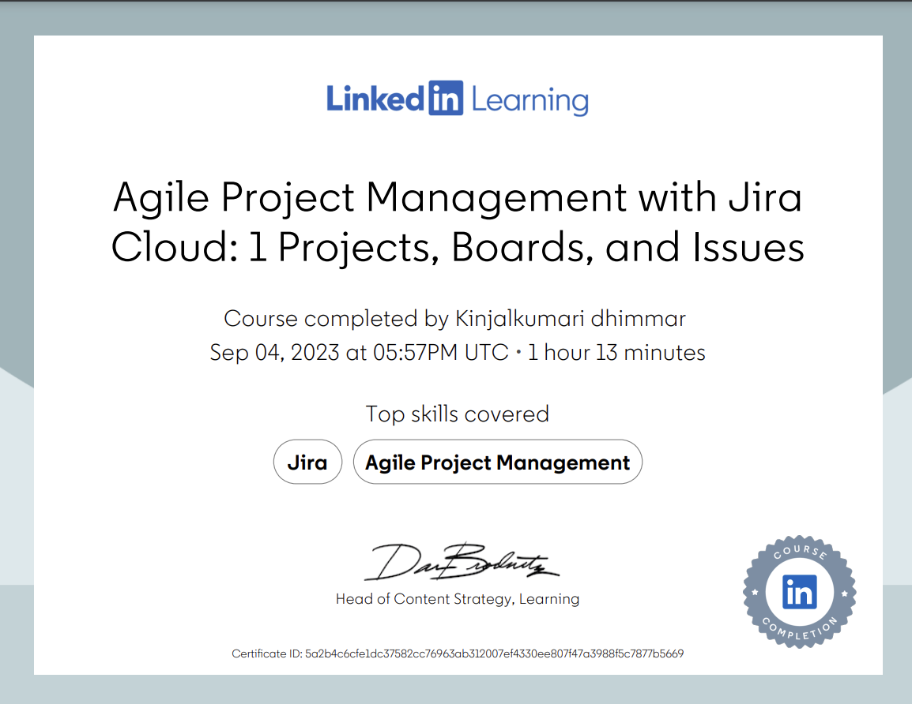
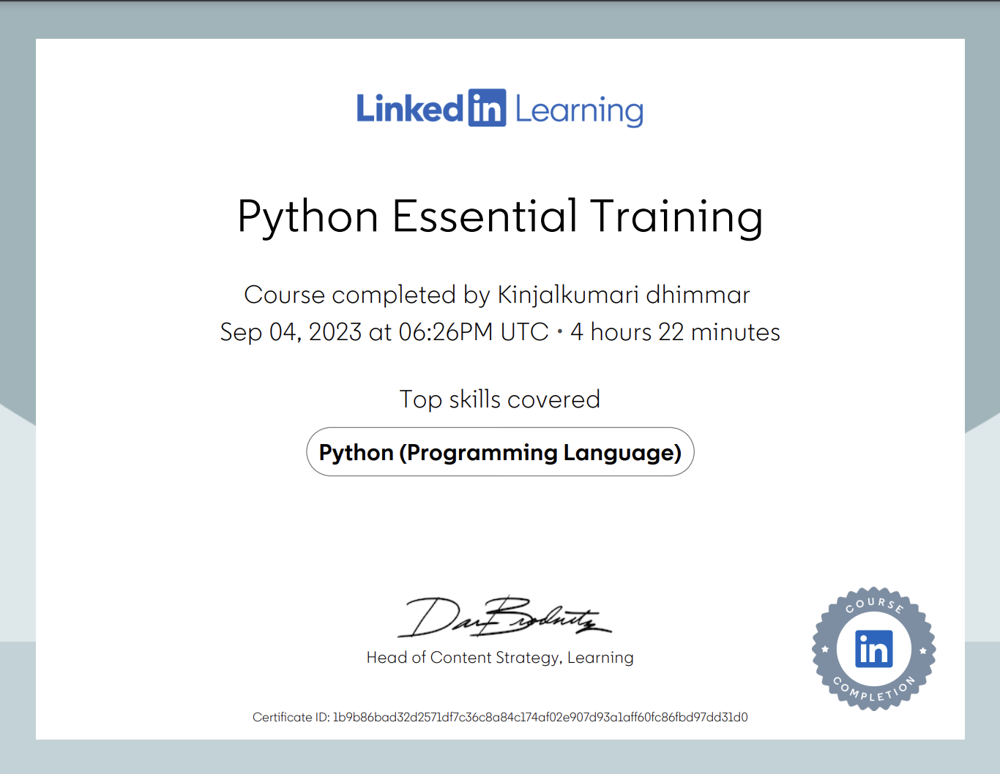
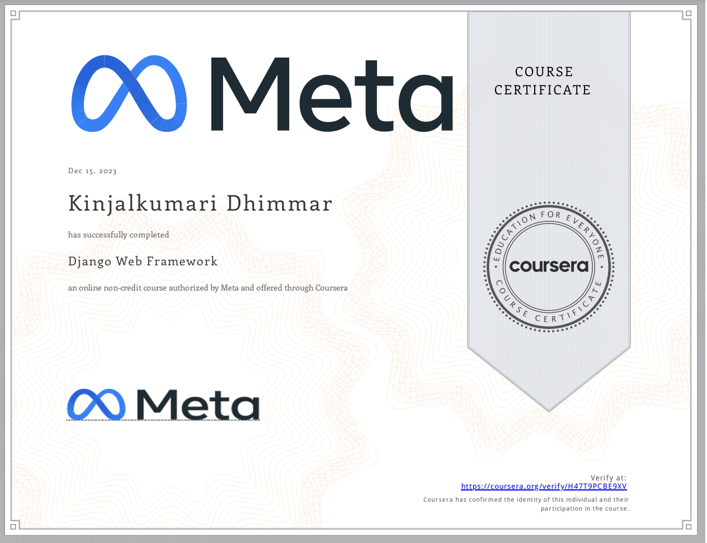
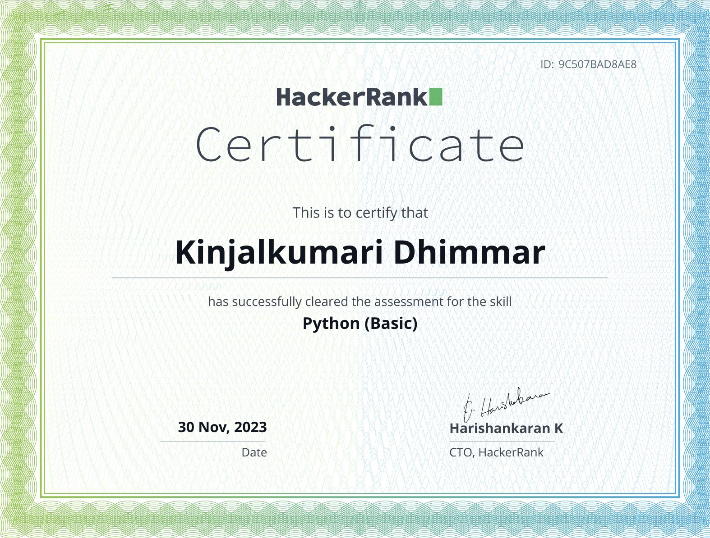
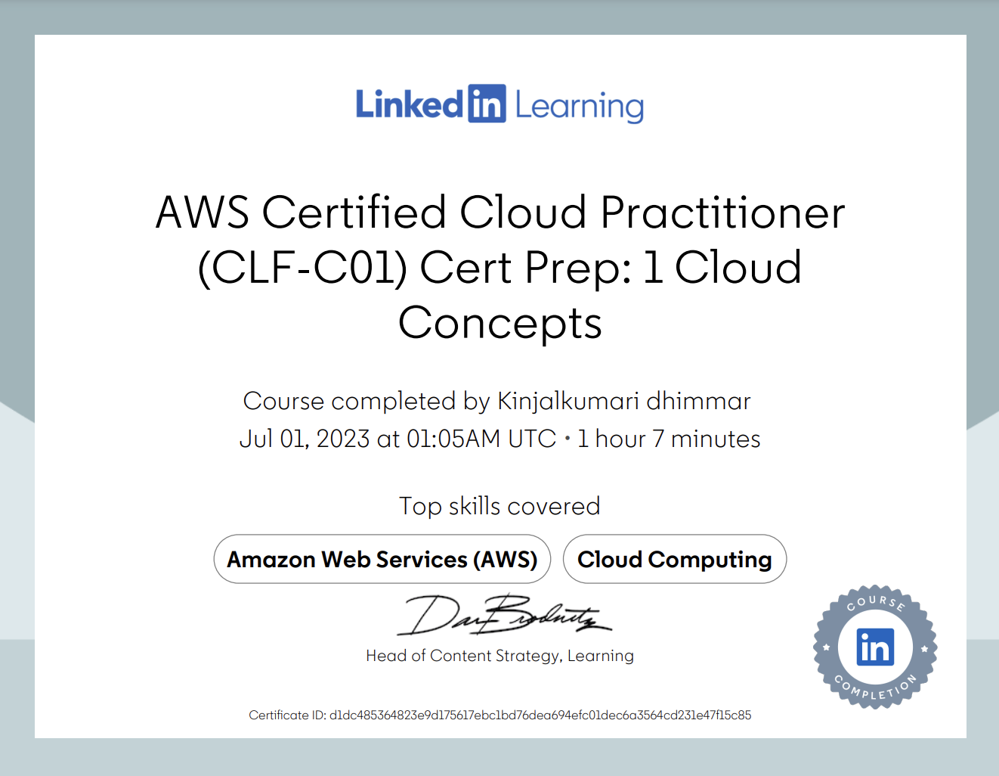
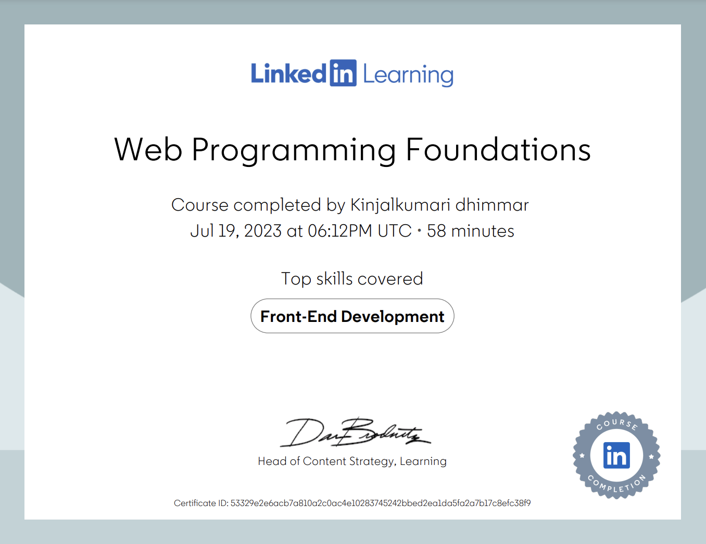

Kinjalkumari Dhimmar
New Grad, Looking for a python developer job.
👉 kdhimmar1501@gmail.com
Qualifications
- ✔️ Artificial Intelligence - Software Engineering Technology Centennial College, Toronto, ON Grade:3.42/5
- ✔️ Bachelor in Computer Engineering Mahatma Gandhi Institute of Technical Education & Research Center, India Grade: 9.56/10
Tech stack
Python, HTML, CSS, JavaScript, React
Django, Flask, FastAPI
Postgres, MongoDB, MySQL
AWS - IAM, S3, Lambda, Sagemaker
Pandas, Numpy, Scikit-learn, Matplotlib
Visual Studio, Visual Studio Code , Anaconda Spyder
Skills
- Strong communication, Problem-solving, Adaptability, Critical Thinking, Relationship management, understanding of business
Work History
🚧 PYTHON DEVELOPER | INFUSION INFOTECH
03/2020 - 06/2021
- Engaged in 3+ projects annually, from research and design to testing and implementation.
- Developed data quality portal using Python scripting, increasing data quality by 30%
- Implemented advanced full-stack programming techniques to develop a mission-critical external web app, resulting in a remarkable 78% increase in user retention.
- Enhanced a web application's performance and scalability, leading to a 30% decrease in page load times and a notable 25% boost in user engagement.
Projects & Accomplishments
Explore more projects →Certifications

Agile Project Management

Python Essential Training

Django framework Meta

HackerRank Python Basic

AWS cloud Practitioner

WebProgramming Foundation